Contents
clear;
clear all;
clc;
Filter and Donwnsample
load('Rcvd_Tria .mat');
B_RCOS = [.0038;.0052;-.0044;-.0121;-.0023;.0143;.0044;-.0385;-.0563;...
.0363;.2554;.4968;.6025;.4968;.2554;.0363;-.0563;-.0385;...
.0044;.0143;-.0023;-.0121;-.0044;.0052;.0038];
filtered = filter(B_RCOS,1,Rcvd);
downsampled = downsample(filtered,4);
scatterplot(Rcvd)
title('Recieved Signal')
scatterplot(filtered)
title('Filtered Signal')
scatterplot(downsampled)
title('Downsampled and Filtered Signal')
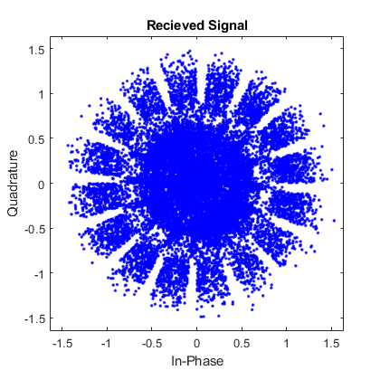 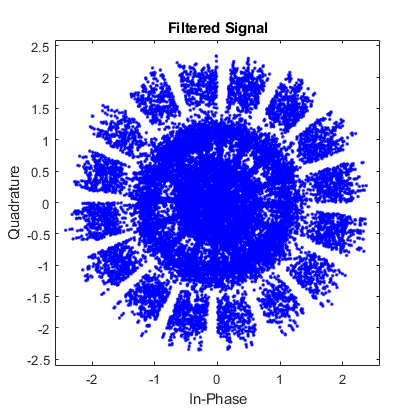 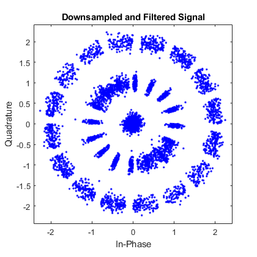
PN Sequence Generation
length_pn=255;
m = zeros(1,255);
a = [0 0 0 0 0 0 0 1];
for i = 1:length_pn
x_1 = mod(a(2)+a(1),2);
x_6 = mod(a(7)+a(1),2);
x_7 = mod(a(8)+a(1),2);
a = circshift(a,-1);
a(1) = x_1;
a(6) = x_6;
a(7) = x_7;
m(i)= a(1);
end
m_flip = flip(m);
Testing PN Using Matlab's example
PN = [8 7 6 1 0];
PNGEN = comm.PNSequence('Polynomial', PN, 'InitialConditions', 1, ...
'SamplesPerFrame', 2^8-1, 'Mask', de2bi(1,8));
PNSEQ = PNGEN();
m_flip_check = m_flip;
for i = 1:length(m_flip_check)
check(i) = sum(m_flip_check == transpose(PNSEQ));
m_flip_check = circshift(m_flip_check,1);
end
verify = max(check)==255;
figure
plot(check)
title('Correct msequence index to match MATLAB')
m_flip_shift = circshift(m_flip,-156);
verified = m_flip_shift == transpose(PNSEQ);
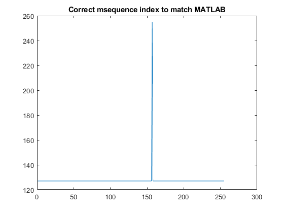
Finding Starting Index
figure
plot(xcorr(m_flip_shift,m_flip_shift));
title('M sequence cross correlation with itself')
correlation = xcorr(m_flip_shift,real(downsampled));
figure
plot(correlation(1:1080));
title('M sequence cross correlation with signal')
m_final = circshift(m_flip_shift,-86);
correlation_2 = xcorr(m_final,real(downsampled));
figure
plot(correlation_2(1:1080));
title('M sequence cross correlation with signal after shift')
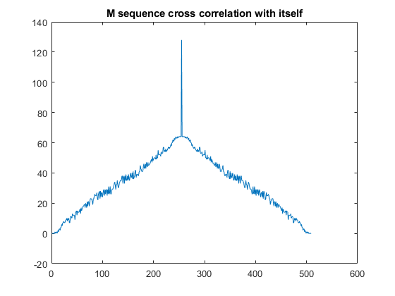 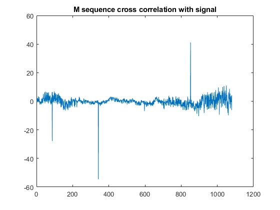 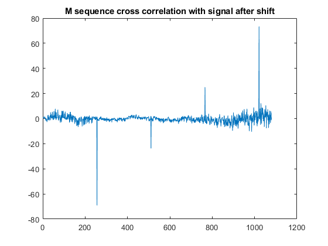
Applying PN Sequencce
num_frame = length(downsampled)/length_pn;
x=1;
post_pn = repmat(m_final,1,num_frame).*downsampled;
scatterplot(post_pn);
title('Signal after applying PN Sequence')
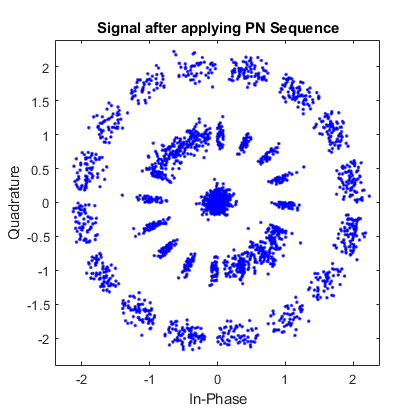
Fixing Frequency and Phase Shift
sign = ((real(post_pn)>0)-.5).*2;
fixed = sign.*(abs(post_pn));
scatterplot(fixed)
title('Signal after fixing frequency and phase shift')
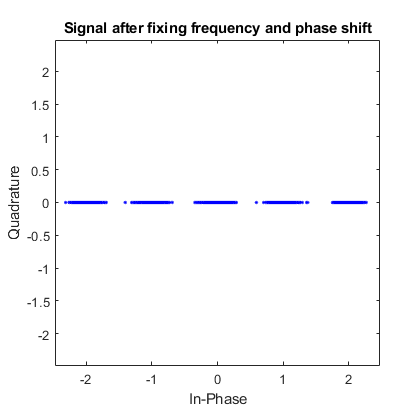
Manual BPSK
o_negative = -1*(fixed < -.5);
o_positive = fixed >.5;
BPSK_sig = o_negative+o_positive;
scatterplot(BPSK_sig)
title('Manually converted to BPSK form')
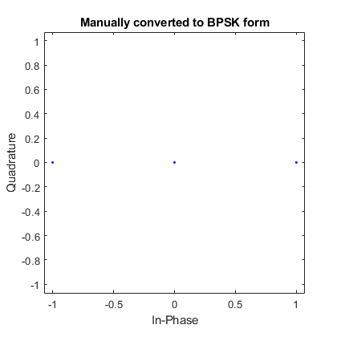
Walsh Channel Orthogonal Spreading
N = 8;
hadamardMatrix = hadamard(N);
resized = reshape(BPSK_sig,[length(BPSK_sig)/8 8]);
unwalsh = resized*hadamardMatrix;
o_negative = -1*(unwalsh(:,6) < 0);
o_positive = unwalsh(:,6) >= 0;
demod = o_negative+o_positive;
out = BPSKdemod(demod);
scatterplot(out)
title('Demodulated Signal')
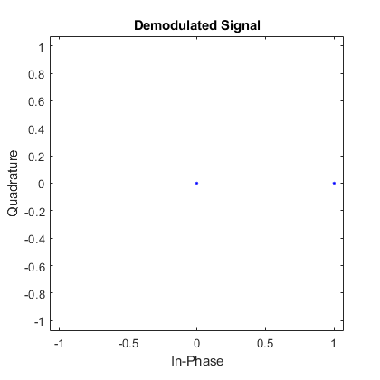
Characters
out_2 = reshape(transpose(out(1:760)),[8 95]);
out_2 = transpose(out_2);
for i = 1:95
c(i) = char(bi2de(out_2(i,:),'left-msb'));
end
for i = 1:95
c_2(i) = char(bi2de(out_2(i,:),'right-msb'));
end
disp(c)
disp(c_2)
* D @HRB ’ S " $ J¤Š @R” @ ˆ À ÀÀ „ !‚ @ ¬‘‚ " '‰‚
@€T $ " JB( I Ê D$ˆ€(R%Qˆ J) @ + @ € @!@„A€5‰A D ä‘A